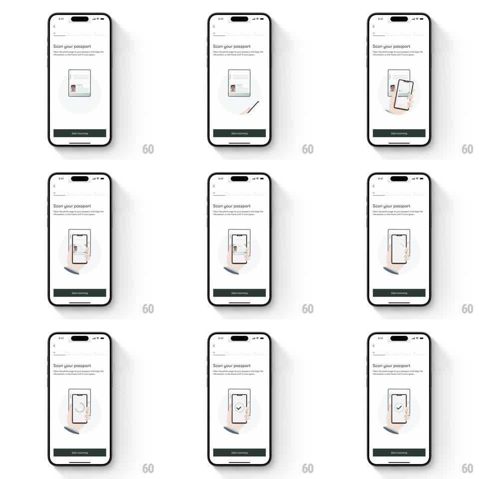

Media
Frame-by-frame

Rebuild this animation 1:1: Cathay Pacific's "Scan your passport" guide - a looping line illustration shows an open passport, a hand lowers a phone over the photo page, a scan frame brackets the passport's data area, and a green checkmark confirms, all above a dark green "Start scanning" button.

Rebuild this animation 1:1: Cathay Pacific's "Scan your passport" guide - a looping line illustration shows an open passport, a hand lowers a phone over the photo page, a scan frame brackets the passport's data area, and a green checkmark confirms, all above a dark green "Start scanning" button. ## Integration Integration: stack-agnostic spec - springs given as stiffness/damping, timed motions as duration + curve; map every value to your framework and animation library of choice. ## Scene White instruction screen with a back chevron: "Scan your passport" title and two lines of guidance copy. Center: a delicate line illustration - an open passport with a photo page, a hand holding a phone that descends over it, a scan frame, and a circular checkmark. Bottom: a full-width dark green "Start scanning" button. ## Motion spec Pattern: looping instructional illustration in four beats. - Beat 1: the open passport sits center; a dashed scan frame fades in over the photo page (300ms). - Beat 2: a hand holding a phone slides in from the lower right (translate 40pt -> 0, 450ms ease-out) and hovers over the passport; the phone's screen shows the passport inside its viewfinder. - Beat 3: the scan frame contracts onto the data area (scale 1.1 -> 1, 300ms) and a scan line sweeps top to bottom (500ms). - Beat 4: a circle draws around a checkmark (stroke draw 300ms), the check pops (scale 0.8 -> 1, spring ~320/16), holds 700ms. - Everything fades to the initial passport state (300ms) and loops; the button stays static. ## Calibration - The illustration is thin dark-green line art - no fills except the green check. - The loop is smooth and educational: about 3s per cycle with clear beats. ## Reduced motion The four beats appear as a static strip; no loop. ## Don't miss - The phone in the illustration mirrors the real scanning UI - frame and all. - The check circle is the only green element besides the button.